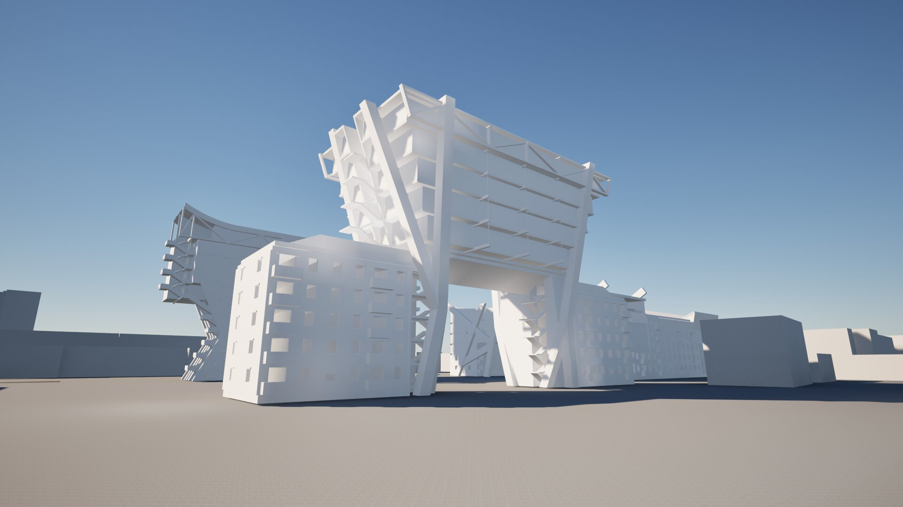
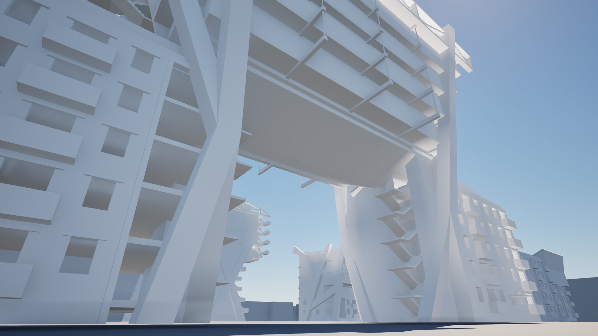
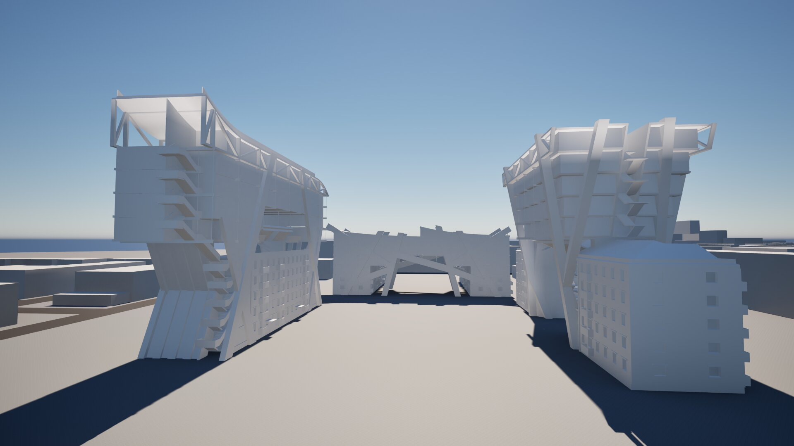

This project aims to create a case study to redesign almost 2million units in the former USSR. Using Soviet inspired architecture, combined with new amenities and living imporvements, this is a take on how we can keep the culture and antiquity of the first social housing projects of the Soviet Union, while creating a much more exciting and modern way of living.


